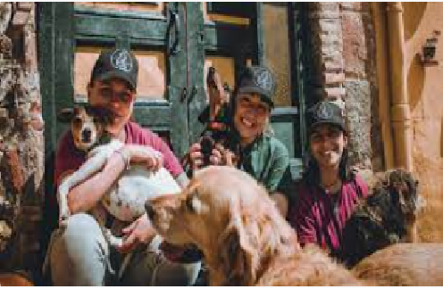
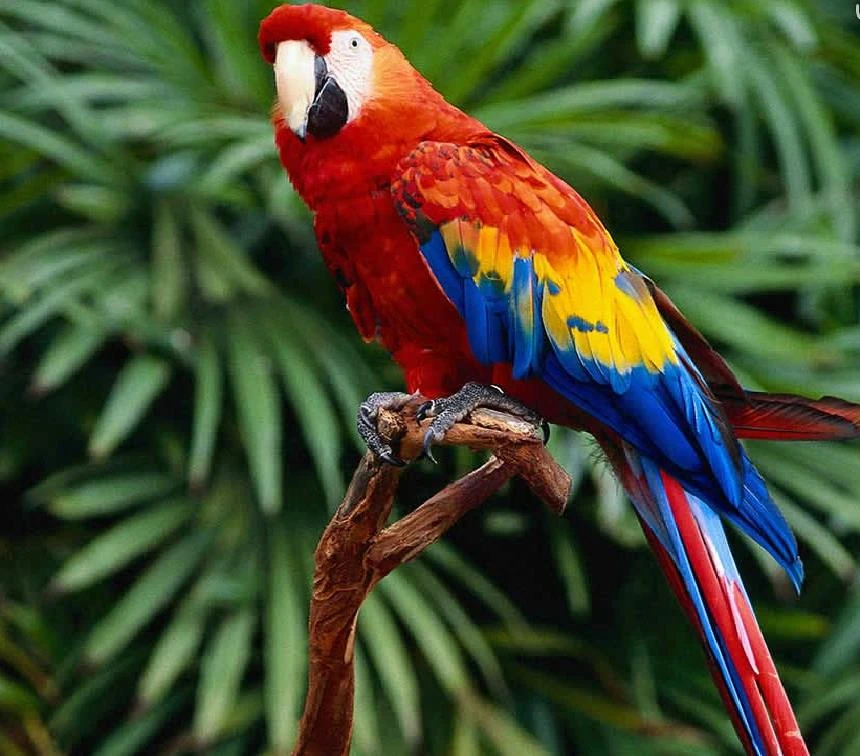
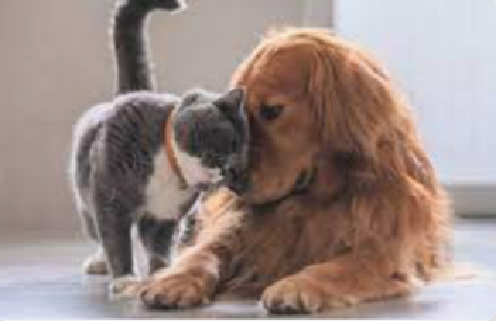

somos un equipo humano que esta guiado por pasión y compromiso, siempre en pro de nuestras maskotas
Trabajamos para encontrar hogares adecuados para los animales abandonados. Cada mascota es cuidadosamente evaluada para asegurar que se le asigne la mejor familia posible.
Ofrecemos talleres, guías y artículos sobre el cuidado de las mascotas, la importancia de la esterilización y cómo prevenir el maltrato animal.
Colaboramos con clínicas veterinarias para ofrecer atención médica básica y urgencias a nuestras mascotas rescatadas, garantizando su salud y bienestar.
Sin la ayuda de nuestros voluntarios y donantes, nuestro proyecto no sería posible. Si deseas unirte a nuestra causa, hay varias maneras de contribuir, ya sea con tu tiempo, recursos o donaciones económicas.
El compromiso se refiere a la dedicación y responsabilidad que una persona asume hacia algo o alguien. Implica una obligación personal de cumplir con las expectativas o tareas que se han asumido, ya sea en un trabajo, una relación o un objetivo. Es un acto de fidelidad y persistencia en cumplir con lo acordado o esperado.
La valentía es la capacidad de enfrentar situaciones difíciles, peligrosas o incómodas con coraje y sin dejarse dominar por el miedo. Es una cualidad que implica tomar decisiones difíciles y actuar con determinación, a pesar de los riesgos o desafíos.
La pasión es una emoción intensa y profunda que impulsa a una persona a hacer algo con mucho entusiasmo, dedicación y energía. Está relacionada con el amor y el interés profundo por una actividad, causa o persona, lo que lleva a una constante motivación y a la búsqueda de la excelencia.
La honestidad es la cualidad de ser sincero y transparente en las acciones, pensamientos y palabras. Implica actuar de manera ética, decir la verdad y ser fiel a los propios principios. La honestidad genera confianza y respeta la integridad de uno mismo y de los demás. Cada uno de estos valores juega un papel fundamental en las relaciones personales, profesionales y sociales, contribuyendo al desarrollo de una sociedad más justa y equilibrada.


Contribuimos a crear un mundo mejor, ayudando a amar y proteger a sus mascotas. Basados en nuestro equipo de trabajo somos solidarios socialmente, brindando la mayor cantidad de trabajo posible, innovando constantemente y logrando un prestigio que nos haga perdurar en el tiempo
La misión de Maskotiando es crear una comunidad que cuide y valore a las mascotas. Buscamos educar a las personas sobre la importancia del bienestar animal y facilitar la adopción responsable, conectando a las mascotas con familias que les den amor, seguridad y cuidado.
Ser una empresa moderna y sólida, líder en el país y con proyección internacional. Liderada por un equipo con acceso a la más alta calidad de capacitación y con una mirada colaborativa e inclusiva.
Nos enorgullece ofrecer productos que no solo cumplen con los más altos estándares de calidad, sino que también son seguros y beneficiosos para tus mascotas. Cada artículo ha sido seleccionado cuidadosamente para asegurarnos de que lo que vendemos apoye la salud, el bienestar y la felicidad de tus compañeros peludos.